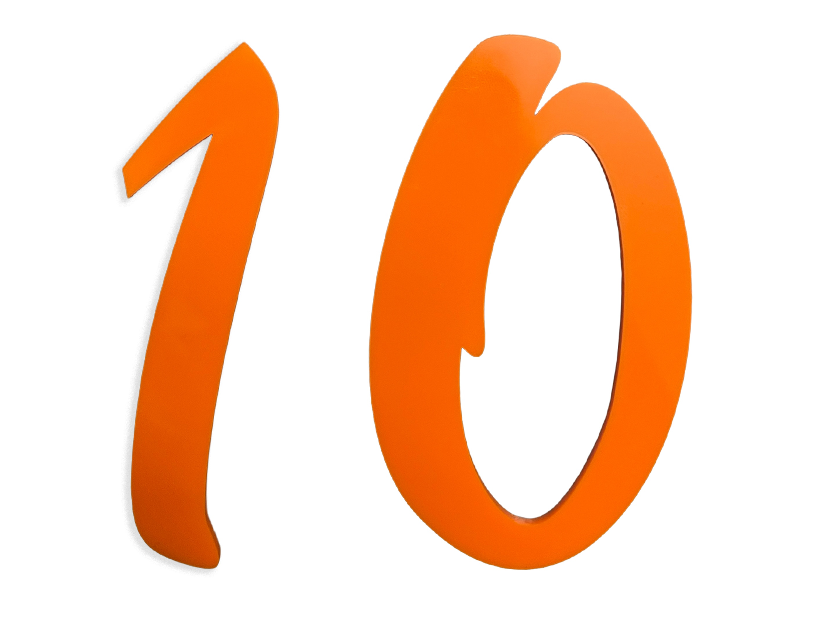
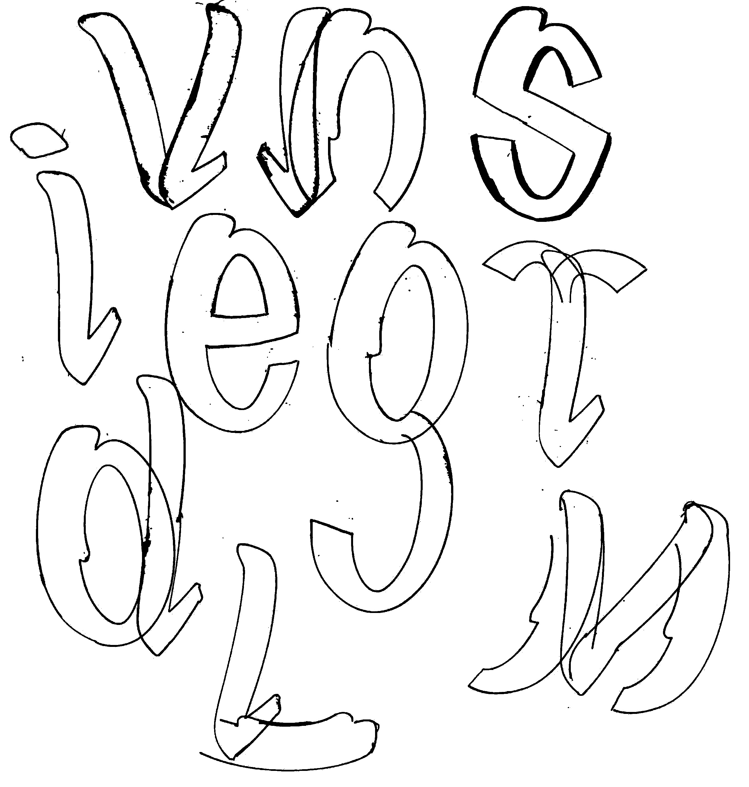
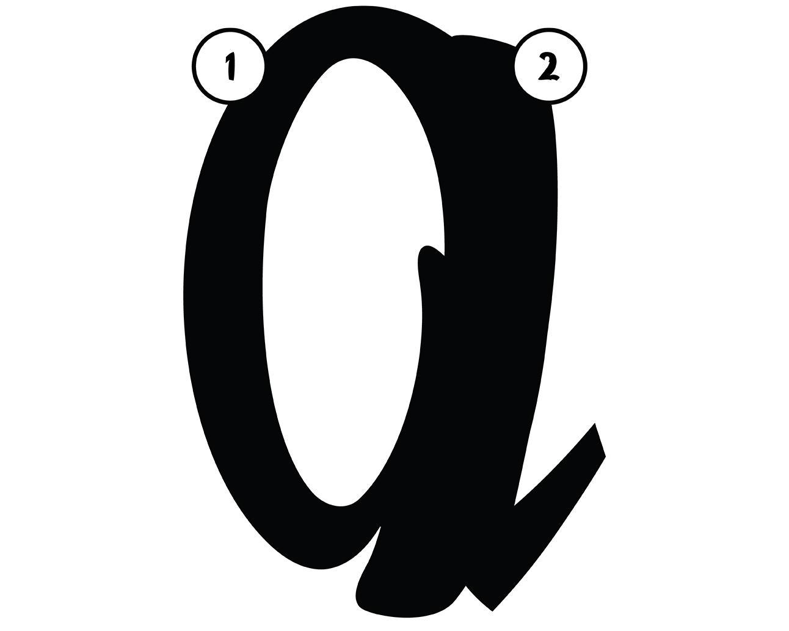
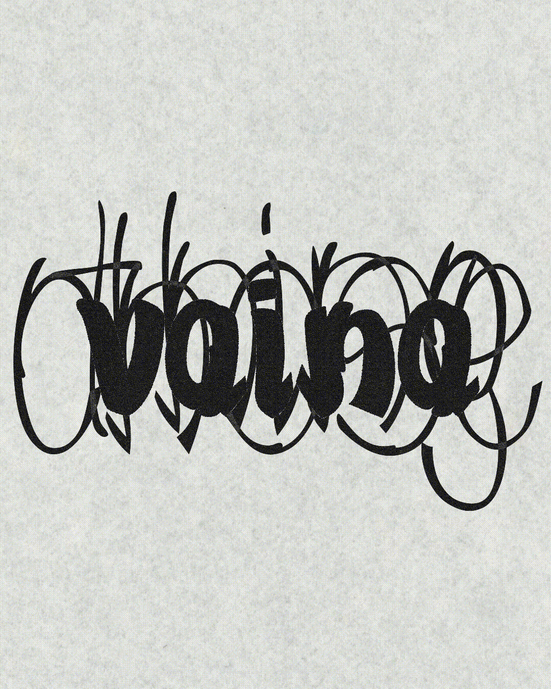
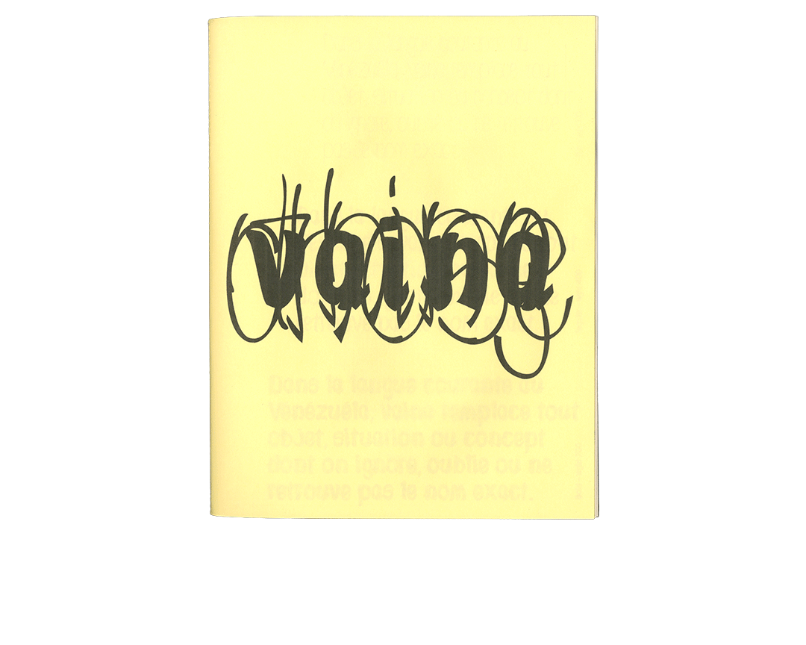

“Hacer mucho con poco,” or doing a lot with a little.
A survival instinct expressed as a design methodology, then as a typographic system.
“Vaina” is a modular, vernacular, and variable typeface. In Venezuela, the word can refer to a thing, a situation, a context, or just about anything. A popular, common, and flexible word, like the two modules borrowed from the Brush Script typeface, used as constraints to develop the project.


The first module curves to the left, the second to the right. Used independently or in combination, they produce a surprising range of forms. A single module can already suggest letters such as c. Joined together, the two pieces generate enclosed forms such as a, b, and d. Repetition and extension then give rise to letters such as n and h.

Once the initial character set was completed, the project turned toward variability. Thin and bold versions of the typeface were developed to explore a weight axis and test the resilience of the system. What happens to a modular typeface when its parts are stretched beyond their original proportions? How much can be added or removed before the language of the forms begins to experience metamorphosis?
Unlike digital interpolation, the process was carried out manually. Every weight required redrawing, rebalancing, and optical correction. Counters opened and closed, joins became too heavy or too fragile, and proportions had to be constantly negotiated. The exercise revealed both the flexibility and the limits of the system: despite their simplicity, the two modules could sustain an unexpectedly broad range of expressions.

The typeface is presented through a printed specimen produced using inkjet printing on Fabriano paper and newsprint. Across its pages, typographic games become a form of autobiographical storytelling. The phrase de una isla pa' la otra acts as both a literal and metaphorical point of departure, tracing a movement between places, languages, and identities. Venezuelan expressions are typeset in parallel with Québec expressions through waterfall compositions, creating moments of translation, misalignment, and recognition.
The publication pays homage to the migratory experience of my parents and to the cultural negotiations that shaped my upbringing. In this sense, the specimen becomes more than a demonstration of a typeface: it is an attempt to understand how movement across territories can be carried within language, typography, and design itself.

This project was launched in the fall of 2025 under the supervision of Judith Poirier as part of the DGX5132 Typography and Innovation course, and developed alongside a variable typography workshop led by Seb Castellanos de la Hoz (Bastarda Type) at the UQAM School of Design. It has since then undergone several iterations and refinements. I would like to thank Matthias Kreutzer and Alexandre Saumier-Demers for their feedback and support throughout the process.